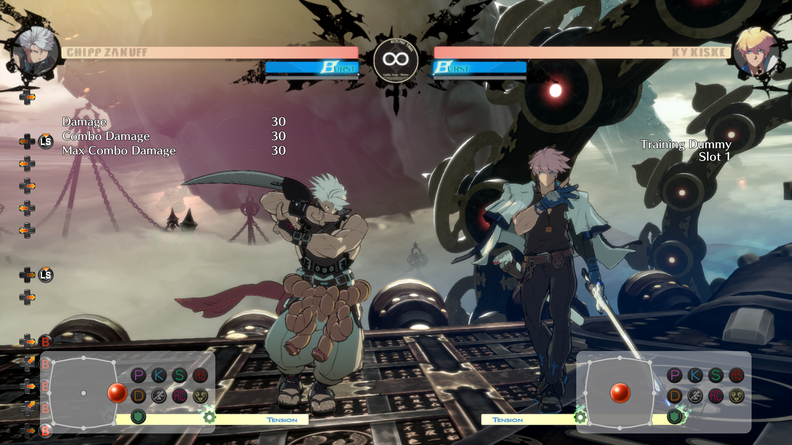
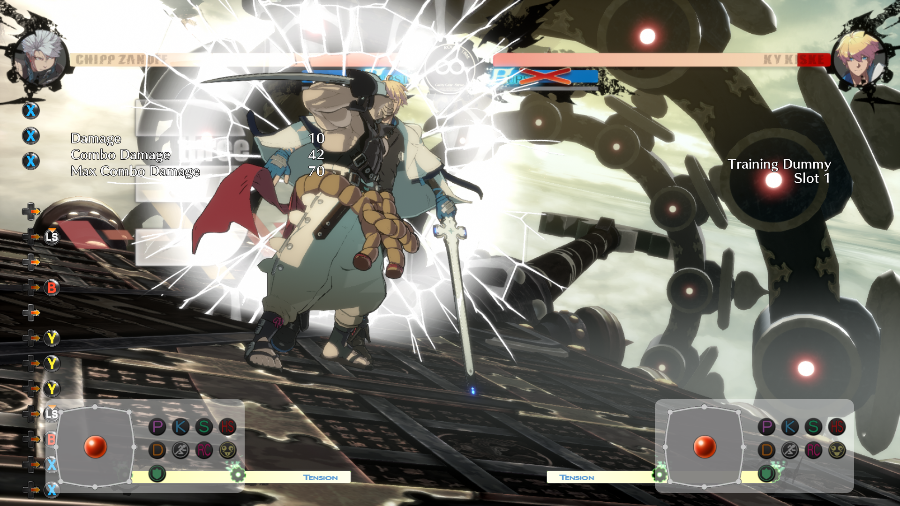

In any fighting game throughout the match your character will be in three different phases;neutral, defence and offence. In the neutral phase neither player has an advantage, all matches start in this phase and this only ends when one player has attained an advantage. Neutral will be returned to if a player has had to drop their offence due to spacing caused by the defensive player or if a knockdown occurs. The goal of neutral is to force the opponent to enter an animation you can punish them for, an example being an uppercut on an airborne target. Offence phase occurs when a player has won neutral and the goal is then to break through the opponents defence to start dealing as much damage as possible. There are multiple ways to break guards though the most common will be hitting the target high if they block low and vice versa. Each attack will either hit high or low which is character dependant. A grab attack will also work as it cannot be blocked. Once the defensive state has been broken you will have space to perform a combo to reduce the opponents hp. The defensive state occurs when neutral is lost, the goal is to block your opponents attacks until an opening or distance from block knockback has occured.
At the start of a match you will have a filled up "Burst Gauge", this is a resource that the player can use for two different types of bursts; blue burst and gold burst. Each of these will use the guage up but have different effects based upon which you do. Blue burst is a last ditch defencive method, it knocks back opponents a considerable distance to save you from combos. If you miss the opponent with this then you will have an empty guage and will be unable to move for a brief period of time in which the opponent can go on the offensive. Gold burst uses your burst gauge to fill your tension gauge, also called a super meter at the bottom of the screen, this will allow for the characters biggest attacks but in return you lose access to blue burst to defend yourself. Whichever is used will determine how you plan to play that round. These gauges will fill over time as well, though it is highly unlikely to get it filled within the same round it is used.
In a majority of fighting games there is a type of super meter at the bottom of the screen, this is an important resource as it will be used for super attacks, moves that do incredibly high damage but if missed or blocked will cause a period of time to be punished and can also misposition you to arena walls. To charge this meter you must hit or block your opponent successfully, otherwise it will not charge at all. Another way to charge would be a gold burst at risk of losing defensive options. Some games will have two types of supers per character, this being a damage and a utility super. Damage supers are designed to punish broken guards to deal as much damage as possible. Utility supers tend to apply a second source of damage to block and can be used to guard break.
Arena's or stages in fighting games will tend to have a boundary known as a wall. These walls are to contain fights within select area however in a number of games these walls or parts of the stage can be broken causing fall offs or zone changes. Fall offs are used most often in 3d fighting games as the arena to fight in tends to be larger and acts as a hazard for both players. In 2d fighting games a wall is most often breakable though, this causes some damage on the player that was used to break the wall and forces the game to enter neutral once the stage transition animation has completed.
